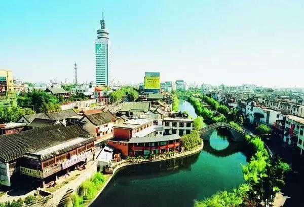
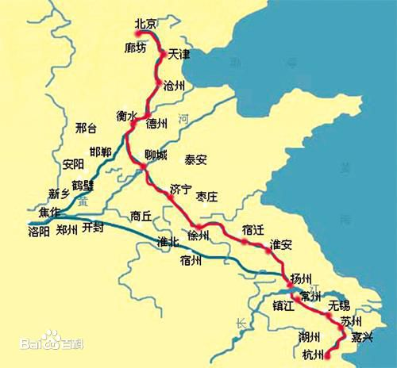

济宁市位于山东省西南部，东邻临沂地区，西与菏泽接壤，南面是枣庄市和 江苏省徐州市，北面与泰安市交界。淮海经济区核心区八大城市之一。济宁 属暖温带季风气候，面积1.1万平方公里，2016年人口835.44万人。
济宁地区历史文化悠久，是东夷文化、华夏文明、儒家文化、水浒文化、 运河文化的重要发祥地之一。儒家创始人至圣孔子、亚圣孟子、复圣颜回、 史家左丘明皆出生于此。元明清时期，京杭大运河促进了济宁商品经济的 繁荣，使济宁成为京杭大运河沿岸重要的工商业城市。2016年全市实现地 区生产总值4301.82亿元，财政预算收入完成391.52亿元、增长9.0%。
济宁市11县市区人文旅游资源丰富，曲阜孔庙、孔府及孔林和境内的京杭 大运河被联合国教科文组织列入世界遗产名录。孟庙、孟府、水泊梁山、 微山湖、宝相寺、峄山、少昊陵等19处全国重点文物保护单位，以及四座 国家森林公园。拥有曲阜师范大学、济宁医学院等高校，以及世界儒学研 究与交流中心孔子研究院。
济宁，具有7000年的文明史，历史文化悠久，是东方文明、中华文明的重要发祥地 之一。远古时期的“三皇五帝”在此留下活动踪迹，人类始祖 黄帝、少昊、少康帝均 出生于济宁；春秋战国时期，被后世尊称为中国历史上五大圣人的“至圣孔子、亚圣 孟子、复圣颜子、宗圣曾子、述圣子思子”都诞生在这里。杜甫、李白、曹操等文人 墨客都在济宁留有足迹。元明清三朝在济宁设立河漕衙门，乾隆等帝王到这里驻足探访。
《赠任城卢主簿》李白
海鸟知天风，窜身鲁门东。
临觞不能饮，矫翼思凌空。
钟鼓不为乐，烟霜谁与同。
归飞未忍去，流泪谢鸳鸿。
历史上的济宁又是“东鲁之大郡，水路之要冲”，在中国运河发展史上具有举足轻重的地位。 当年运河全线科技含量最高、可与四川都江堰相媲美的南旺分水枢纽工程也建在济宁。清代 康熙、乾隆南巡曾几度驻跸济宁。从文化的经济特征看，济宁运河文化首先是一种工商业文化。 济宁是在运河功能转向物资交流的大背景下发展成为州治及水陆交通重镇的。史载，当年在济宁 定居的外地商人不下数万家，南方的纺织品、瓷器、竹木、茶叶等在此中转，北方的棉花、皮毛、 大豆、干鲜果品在此聚集南下，当时的济宁“车马临四达之衢，商贾集五都之市”，年营业额高达 白银亿两以上。
  点我返回